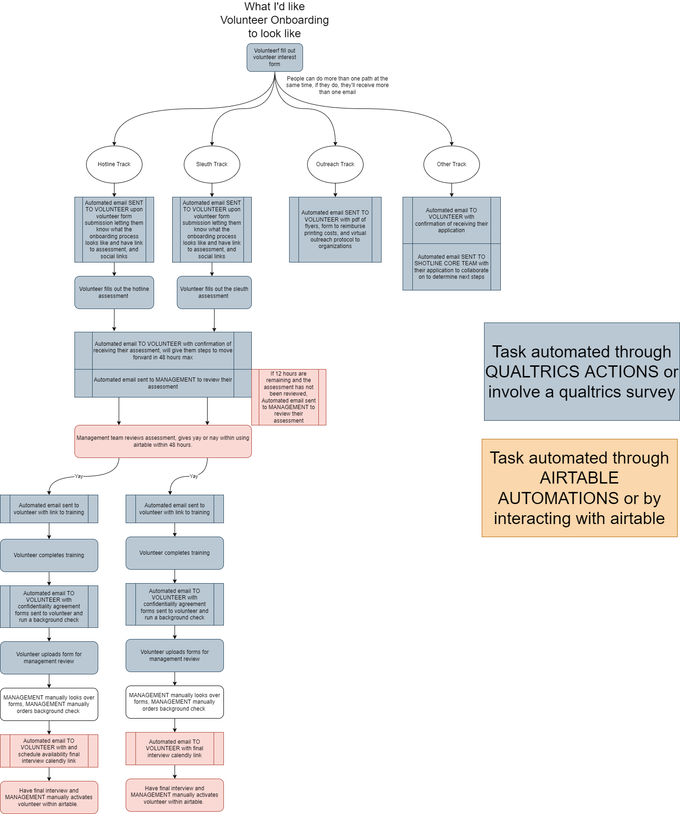
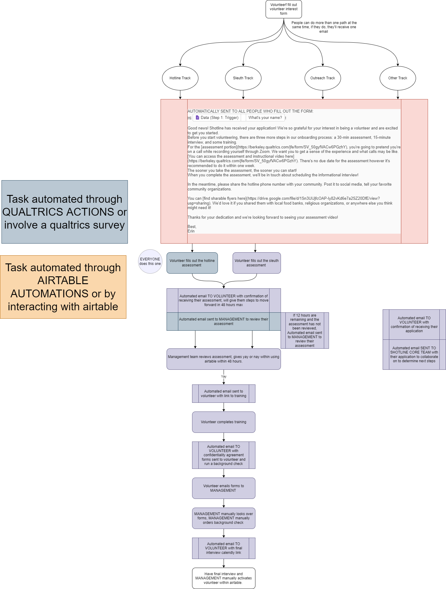

A note befor we begin: Thank you to all who volunteered. I greatly appreciate everyone's time, effort, and positive intentions.
Finding Volunteers
We were fortunate that this part was easy. People saw the system and knew it was broken and knew that the solution was within reach. So our volunteering program offered an outlet for the many people wanting to help with COVID-19 vaccination efforts.
We put a volunteer interest form in the caption of our post asking people to share our service with their community. And even though it was buried in the “read more”, people started filling them out.
We reach out to friends, trained and untrained colleagues. After this first ask, we opened up our pools and posted on our own personal social media. After this push, we posted in virtual vaccine finder facebook groups. By then we were up to our noses in potential volunteers. Wow!!
Onboarding

By the time that we wanted to bring on volunteers, we had created the sleuth role. In this role you just have to asynchronously find appointments, without requiring you to speak to others on the phone. Turns out, some people don’t love talking on the phone… So offering a phone call free role caused interest in volunteering rose like crazy.
There were a couple unique challenges with volunteer onboarding regarding trust and potential for bad actors. The onboarding process needed to be challenging enough to dissuade bad actors from completing the training, but not so challenging that well intentioned potential volunteers would not complete the process. We decided to create a synthetic hurdle before accessing the any information about the information we had to store. This came in the form of a 20 minute challenge that volunteers had to complete prior to the bulk of the training. Turns out that our hypothesis that the challenge was a deterrent was accurate. However, it detered all users from completing the training ing So we didn’t want any bad actors to access the information regarding how to use our volunteer portal which included private information of Shotline’s callers. So before allowing volunteers to see the portal training videos, they must complete the health privacy training, and signed the confidentiality agreement. Sure it doesn’t prevent bad actors from going through the system and then accessing the form
But the actual onboarding process looked like this.
So we went back to our volunteer outreach process and made modifications to the listing as well as the training assessments in order to make the position more accessible. After this change we were able to onboard 7 volunteers who completed health privacy and role training. We began the process of acquiring volunteers slowly, first bringing on one volunteer to take calls and one to sleuth. To onboard volunteers we had to develop a system, onboarding process and database as well as look for volunteers. We put out a listing saying we were looking for volunteers and a lot of people signed up saying they were interested. However when it came to completing the application, only a few actually followed through. And we couldn't help but wonder if we were making the process too time consuming or difficult. Streamline the process Assessment and numbers skyrocketed. Iteration guided the training and volunteer support from the very beginning. Early volunteers had individual hour long meetings with our team so we could answer any questions. These meetings were a critical part of the volunteer training creation as they helped us understand the needs of volunteers in order to create comprehensive training videos to streamline the process later. Additionally, we had high touch interactions with our volunteers by setting the expectation that our system wasn’t perfect and needed improvement. Every single text, email, phone call with a volunteer resulted in a change to our system, either major or minor.